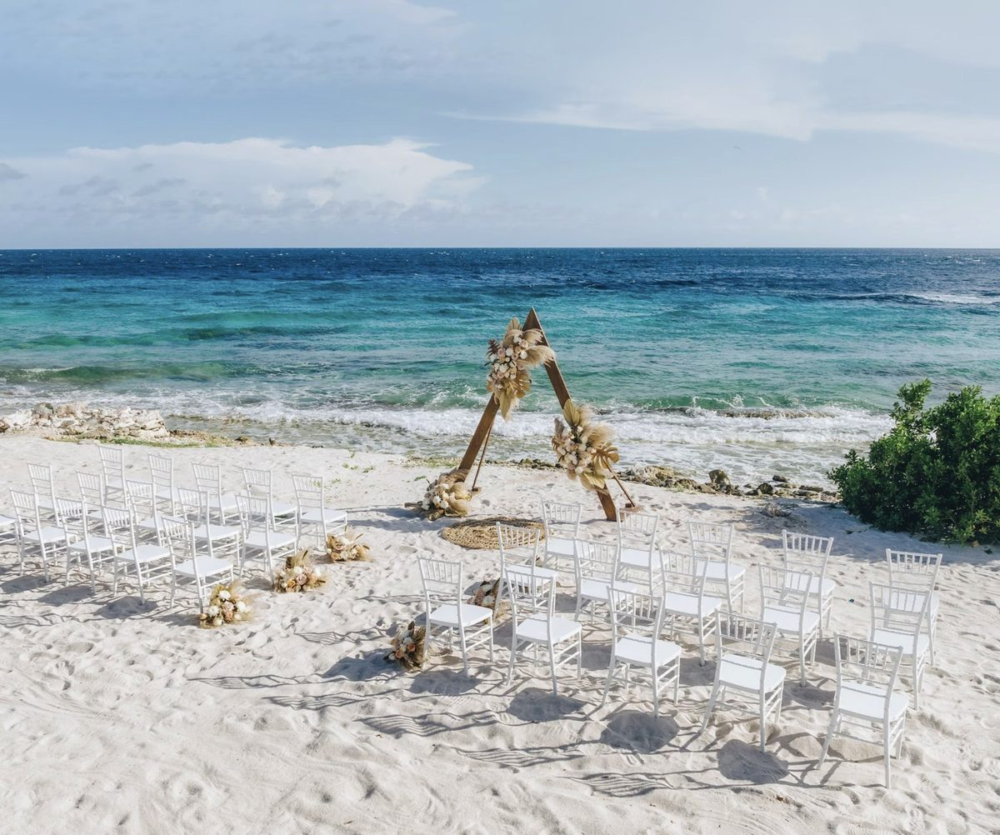
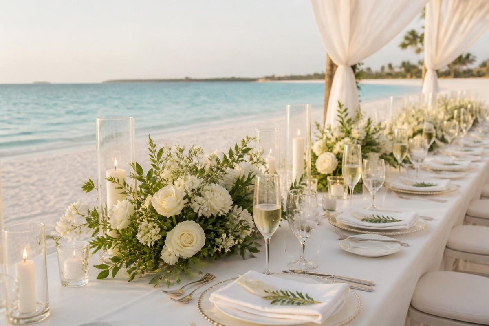
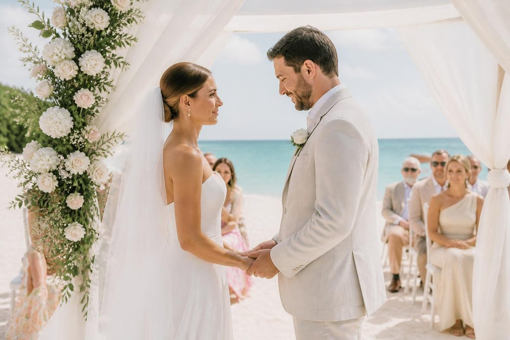

Destination Weddings
Destination Wedding Planning Checklist: A 12-Month Timeline

If you are searching for a destination wedding checklist, you are probably somewhere between excited and quietly overwhelmed. That is a reasonable place to be. A destination wedding has every moving part of a regular wedding, plus passports, flights, room blocks, and guests who need clear instructions from you. The good news is that the order of the work matters more than the speed of it.
This is the timeline I walk couples through when they plan a destination wedding in Mexico or the Caribbean. Use it as a starting point and adjust it to your date, your guest list, and the resort you choose.
How to Start Planning a Destination Wedding
Before you open a single resort website, answer three questions. They shape every decision after them.
How Many Guests Should You Invite to a Destination Wedding?
A destination wedding with twenty close people feels completely different from one with a hundred. Decide whether you want intimate and unhurried, or a full celebration with family from several cities. Your guest count narrows the list of resorts faster than any other factor.
Best Time of Year for a Destination Wedding in Mexico and the Caribbean
The Atlantic hurricane season runs from June through November, which affects Caribbean and Mexican Caribbean weddings. It does not mean those months are off limits, but it does mean you should ask each resort about weather policies and plan with flexibility. Many couples choose winter and spring for the most predictable weather.
Do You Need a Wedding Planner for a Destination Wedding?
Some couples enjoy the planning. Most would rather be present for the wedding itself. If you are in the second group, a resort with a strong in-house wedding team and a travel advisor handling guest logistics keeps the whole thing calm.

12 to 14 Months Out: How to Choose a Destination Wedding Location
- Choose your destination and resort. Compare wedding teams, ceremony spaces, and what is included, not just the photos.
- Reserve your date. Peak dates fill early, so this is the step that rewards starting sooner.
- Set up a guest room block. Ask about hold deadlines, minimum commitments, and when you can adjust numbers.
- Check passports. Anyone traveling needs a valid passport, and renewals take time.
- Start the legal research. Residency rules, documents, and translations vary by country, so begin now.
9 to 12 Months Out: When to Send Destination Wedding Save the Dates
- Send save the dates. Destination guests need more notice than usual to save money and request time off.
- Launch a simple wedding website. Include the resort, the dates, how to book, and a clear contact for questions.
- Gather your legal documents. Some destinations require certified copies, translations, or apostilles. Confirm each requirement with official sources.
- Book a photographer and videographer. Many resorts have preferred vendors, so ask before you hire from home.
If you are comparing a legal ceremony at the destination with a symbolic ceremony and a legal one at home, this is the stage to decide. Both are common. The right choice depends on the paperwork timeline and how much you want to handle from a distance.
6 to 9 Months Out: Destination Wedding Invitations and Guest Travel
- Send formal invitations with booking instructions and the room block deadline.
- Help guests book. A single page with flight tips, transfer information, and the resort link removes most questions.
- Plan the welcome event and group activities. A casual first night helps guests who do not know each other.
- Book florals, music, and hair and makeup. Confirm what the resort provides and what you arrange yourself.
- Order attire. Choose fabrics that travel well and handle heat and humidity.
3 to 6 Months Out: Final Details to Book for a Destination Wedding
- Finalize menus, decor, and the ceremony script with the wedding coordinator.
- Share a preliminary guest count with the resort.
- Review every vendor contract and payment schedule, and note the deadlines.
- Draft the day-of timeline, including guest transfers and photo time.
- Confirm airport transfers for you and your guests.
Destination Wedding Checklist for the Final Month
- Confirm RSVPs, dietary needs, and room assignments.
- Do your final fittings and plan how your attire travels. Carry it on if you can.
- Create one emergency contact list for vendors, the resort, and a trusted guest.
- Arrive early. Three to five days before the wedding gives you time for paperwork, walkthroughs, and a welcome event without rushing.

Common Destination Wedding Planning Mistakes to Avoid
- Choosing the resort from photos alone. Two resorts can look identical online and feel completely different in person. Choose by how you want the wedding to feel, then compare.
- Assuming everyone will come. Invite generously and plan for fewer attendees.
- Waiting on the legal details. Paperwork is the part that cannot be rushed. Start early and verify with official sources.
- Leaving guests to figure out travel. The easier you make booking, the more people say yes.
- Skipping the questions about what is included. Ask what the wedding package covers, what costs extra, and what happens if the weather changes.
If you would like this timeline built around your date and your guest list, the free Destination Wedding Blueprint walks through the first decisions in order, and my destination wedding planning page explains how I handle the rest.
Destination Wedding Planning Questions Answered
How far in advance should you plan a destination wedding?
Twelve months is a comfortable window for most couples. It gives you real choice of dates and resorts, and it gives your guests time to save, request time off, and book flights. You can plan a destination wedding in six months or less, especially at an all-inclusive resort with an on-site wedding team, but expect fewer date and room options.
What should you book first for a destination wedding?
The place and the date come first, followed by the guest room block and your own flights. Everything else, including photographers, florals, and music, depends on where you are marrying and when, so those choices follow the venue.
Do you need a wedding planner for a destination wedding?
You need someone coordinating the details on the ground. Many resorts include a wedding coordinator, and some couples add an outside planner for larger or more customized weddings. A travel advisor who specializes in destination weddings handles the other half: guest travel, room blocks, and the timeline.
How many guests actually come to a destination wedding?
Fewer than you invite. Travel, time off, and cost mean some guests will decline, and that is normal. Build your guest list with that in mind, and decide early whether you want an intimate celebration or a larger group.
Do you have to be legally married at the destination?
Rules vary by country, and sometimes by region. Some couples complete the legal paperwork at home and hold a symbolic ceremony at the destination, while others marry legally on site. Ask the resort's wedding team what is required, then confirm with official government sources before you finalize anything.

I am a luxury travel agent and advisor based in Gainesville and Ocala, Florida, specializing in destination weddings, honeymoons, river cruises, wellness escapes, and group travel. More about me